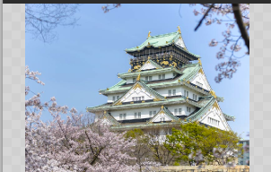
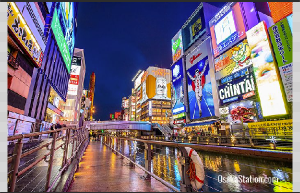
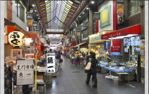
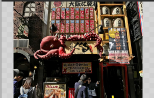
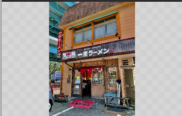
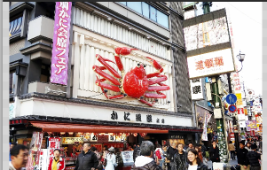

Osaka, située sur la côte ouest du Japon, est une ville dynamique et gourmande réputée pour sa cuisine délicieuse, ses gratte-ciels modernes et son ambiance animée. Surnommée la "cuisine de la nation", Osaka est un paradis gastronomique où l'on peut déguster des spécialités locales comme le takoyaki (boulettes de poulpe) et l'okonomiyaki (sorte de crêpe japonaise). La ville abrite également des sites emblématiques tels que le château d'Osaka et le quartier animé de Dotonbori, offrant aux visiteurs une expérience culturelle et culinaire exceptionnelle.
|  |  |  |
|---|---|---|
| Château d'Osaka : Ce château imposant est un trésor historique, offrant une plongée dans le passé féodal du Japon avec son architecture majestueuse et ses expositions fascinantes. | District de Dotonbori : Dotonbori est l'épicentre de l'animation à Osaka, avec ses néons éclatants, ses restaurants, ses boutiques et ses divertissements nocturnes, créant une ambiance électrique et festive. | Le Marché de Kuromon Ichiba : Un paradis pour les gourmets, ce marché vivant propose une variété incroyable de produits frais, de fruits de mer et de plats préparés, offrant une expérience culinaire inoubliable à Osaka. |
|  |  |  |
|---|---|---|
| Dotonbori Kukuru (くくる) : Ce restaurant de kushikatsu (brochettes frites) emblématique de Dotonbori propose une variété de viandes et de légumes délicieusement panés et frits, offrant une expérience culinaire authentique d'Osaka. | Ichiraku (一楽) : Spécialisé dans les ramens, Ichiraku propose des bols de nouilles riches en saveurs avec des bouillons savoureux et des garnitures variées, offrant une expérience gustative mémorable. | Kani Doraku (かに道楽) : Célèbre pour ses plats de crabe frais, ce restaurant propose une gamme de mets à base de crabe, de sashimi aux tempuras, mettant en valeur la cuisine de la mer d'Osaka de manière délicieuse et raffinée. |